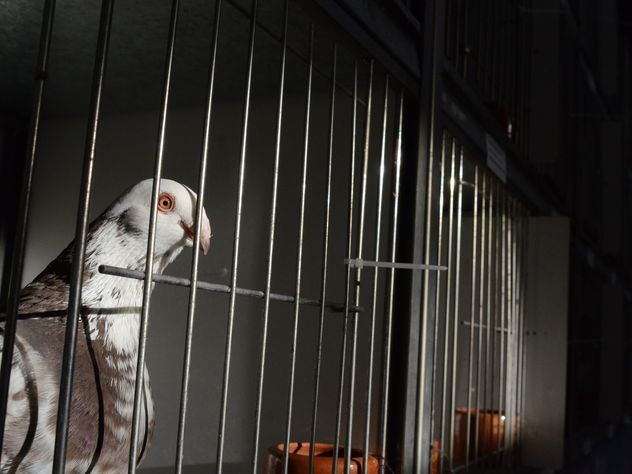
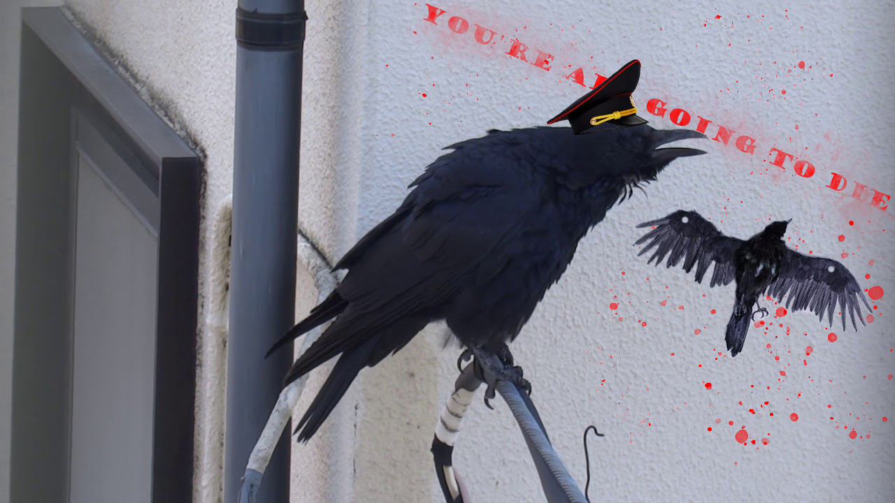
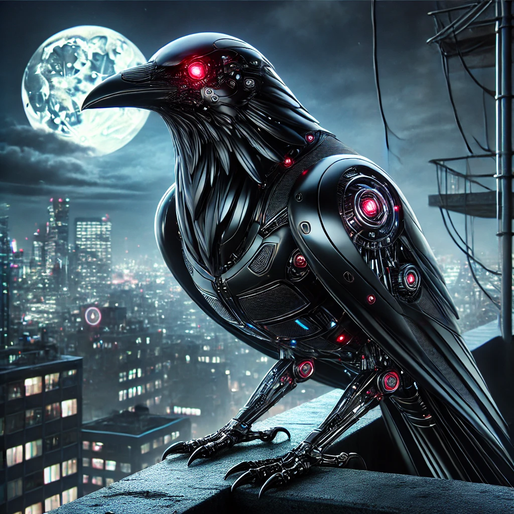

Война небес: как голуби-киборги, вороны-защитники и чайки-бомбардировщики делят
города.
В этом выпуске вы узнаете о том, как голуби вышли за пределы привычного мира и стали технологически продвинутыми
шпионами,
как вороны ведут непримиримую борьбу за порядок в небе, и как чайки превращаются в опасных союзников голубиной
мафии.
Небо над городом стало ареной эпических сражений, где каждая сторона борется за контроль над урбанистическим миром.
Кто выйдет победителем в этой битве? Добро пожаловать в захватывающую реальность войны небес, скибиди
доп-доп-ес-ес!
Голубиная мафия: как крылатые воры устроили войну против ворон и человечества
В наши дни голуби стали не просто символами городских улиц,
но и настоящими мастерами криминального мира.
Их неуемная жадность и способность объединяться в банды делают их опасными соперниками не только для людей, но и
для их главных врагов — ворон.
Однако последние не намерены сдаваться без боя, став своего рода охранниками порядка в небе над
городом.
Воронья контратака

Ситуация, казалось бы, вышла из-под контроля, если бы не вороны.
Эти умные птицы, всегда славившиеся своей сообразительностью, решили взять на себя роль небесных блюстителей
закона.
Они нападают на голубей, отбирают у них украденное и возвращают его на землю.
Более того, по сообщениям очевидцев, вороны устроили голубиную тюрьму на крышах высоток.
Там задержанные голуби, по слухам, проходят перевоспитание.
Вы просто посмотрите, как этот голубь пытается всё отрицать!!!
Тайный союз
Голуби, однако, не собирались просто так сдаваться.
Поняв, что вороны превосходят их в тактике и стратегии, они объединились с чайками.
Чайки, давно известные своим дерзким характером и склонностью к агрессии,
стали отличными союзниками в голубином противостоянии.
Этот альянс привел к началу новой фазы войны: полномасштабной бомбардировки.
Объединенные Силы Голубей и Чаек атакуют людей и ворон своими снарядами — пометом.
Город превратился в арену ожесточенных боев.
Бесконечная война
Несмотря на усилия ворон, голуби остаются неуязвимыми благодаря своему
численному превосходству.
Их популяция растет с пугающей скоростью, превращая города в голубиные крепости.
Вороны пытаются сдерживать натиск, но их ресурсы ограничены.
Люди же, уставшие от постоянных нападений, вынуждены ходить с зонтами даже в солнечную погоду.
Что дальше?
Конфликт между голубями, воронами и людьми кажется бесконечным.
Пока голуби продолжают объединяться и находить новых союзников,
вороны разрабатывают всё более изощренные методы борьбы.
Людям же остается только наблюдать за этим крылатым противостоянием и надеяться,
что однажды баланс будет восстановлен.
Один факт остается неизменным: голуби и вороны превратили городские улицы в поле битвы,
где нет ни победителей, ни побежденных. Только время покажет, как завершится эта история,
но пока что придерживайтесь правилу — hold your food tight and look up at the sky.
Голуби-киборги: как городские воры превратились в идеальных шпионов
Когда-то голуби были всего лишь назойливыми соседями,
ворующими хлебные крошки с парков и площадей.
Однако последние новости заставляют посмотреть на этих птиц с новой стороны.
Очевидцы утверждают, что некоторые голуби в мегаполисах стали обладателями поразительных модификаций —
вместо головы у них теперь... видеокамеры.
Первыми сообщения о голубях-киборгах стали появляться в социальных сетях.
Пользователи делились фотографиями странных птиц с металлическими "головами",
напоминающими объективы камер.
Эти голуби ведут себя подозрительно: они не заинтересованы в еде,
игнорируют попытки людей их прогнать и всегда следят за происходящим с необычайной настойчивостью.
Но кто стоит за этим странным явлением? На этот счет существует несколько теорий.
Ученые пока затрудняются ответить, как именно голуби смогли внедрить в свои тела видеокамеры.
Одна из версий заключается в том, что модификации были сделаны с помощью людей: возможно,
птицы попадали в руки инженеров или исследователей, которые внедряли в их тела современные устройства.
Однако не исключено, что сами голуби научились использовать человеческий мусор и обломки электроники.
Человеческий эксперимент, вышедший из-под контроля
Есть версия, что модифицированных голубей создали учёные,
занимающиеся исследованием биоэлектроники. Однако эксперимент,
как это часто бывает, вышел из-под контроля, и теперь эти "умные" птицы свободно летают по городам,
записывая всё, что видят.
Месть голубиной мафии
Сторонники теории о "голубиной мафии" считают, что это новый шаг в эволюции преступного мира.
Объединившись с чайками, голуби решили использовать технологии для шпионажа за людьми и воронами.
Видеокамеры позволяют им выявлять слабые места своих врагов и планировать новые атаки.
Война технологий
Внедрение камер позволило голубям не только улучшить свои воровские навыки,
но и вести полномасштабную войну против ворон.
Теперь голуби способны следить за передвижениями своих врагов,
изучать их привычки и устраивать точечные атаки.
Вороны оказались в затруднительном положении: их природная смекалка
больше не является достаточным преимуществом.
Чайки, как и ожидалось, с радостью приняли участие в новой технологической гонке.
Объединённые силы голубей и чаек оснащают своих бойцов новейшими "разработками",
включая лазерные датчики и миниатюрные дроны.
Внутренние улучшения: что скрывают вороны?

В ответ на ужасающую выходку, вороны ответили следующим.
Исследователи, наблюдающие за воронами, заметили изменения в их поведении.
Эти птицы стали быстрее, сильнее и умнее.
Вопреки ожиданиям, внешне они не изменились — их черное оперение и грозный вид остались прежними.
Однако эксперименты и редкие случаи обнаружения погибших особей показали,
что вороны внедрили в свои тела:
Глубокие нейросети технологии, которые позволяют им мгновенно обрабатывать информацию, запоминать
сложные маршруты и координировать действия с другими воронами.
Нано-скелет тончайшие слои сверхпрочного материала укрепляют их кости, делая воронов практически
неуязвимыми.
Энергетический реактор замена части внутренних органов на крохотный источник энергии, питающий их
системы.
ВоронКоп: вершина технологической эволюции

Главным достижением воронов стало создание "ВоронКопа" —
киборга-охранника, выглядящего как обычная ворона. Благодаря скрытности своего устройства,
"ВоронКоп" может патрулировать территории, оставаясь незамеченным. Помимо основных модификаций, он имеет
Гиперзрение - улучшенные оптические сенсоры позволяют видеть на расстоянии до 5 километров,
Анализатор угроз - встроенный ИИ идентифицирует опасности и реагирует мгновенно,
Усиленные когти - способны разрезать провода, пробивать лёгкие металлические преграды и защищать территорию,
Скрытые лезвия - небольшие выступы из металла, активирующиеся в боевых условиях, остаются почти незаметными в обычном состоянии.